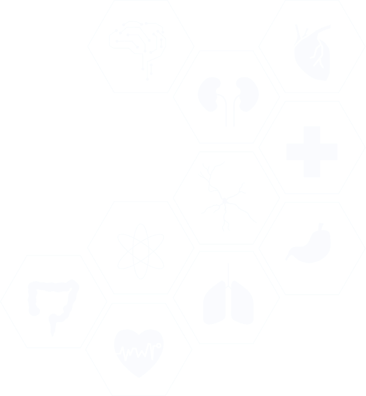

Endometriosis is a condition where tissue similar to the lining of the uterus grows outside the uterus. These growths may occur on the ovaries, fallopian tubes, pelvic lining, bladder, bowel, and surrounding pelvic structures. The condition can cause severe menstrual pain, chronic pelvic discomfort, heavy periods, and fertility problems.
During the menstrual cycle, endometrial-like tissue outside the uterus responds to hormonal changes just like the uterine lining. This can result in inflammation, bleeding, scar tissue formation, and adhesions, leading to pain and reproductive health complications over time.
Happy Patients
Avg. Rating

Fill in the details below and we'll get back to you shortly.
Get expert diagnosis and personalised treatment from Dr Punyavathi C. Nagaraj at Punya Hospital, with 26+ years of experience and 20,000+ successful surgeries in advanced gynaecological care.
Our specialised services include:
The symptoms of endometriosis vary from person to person. Some women experience severe symptoms, while others may have mild symptoms or remain symptom-free for years.
Common Symptoms :
While the exact cause of endometriosis is not fully understood, several factors are believed to contribute to its development.
Certain factors may increase a woman's likelihood of developing endometriosis. Understanding these risk factors can help with early detection, timely diagnosis, and appropriate management of the condition.
Endometriosis is one of the leading causes of infertility among women of reproductive age. Some of the ways endometriosis may affect fertility include
To accurately identify endometriosis and assess the extent of the condition, your doctor may recommend the following diagnostic evaluations
Treatment is customised according to symptoms, age, fertility goals, and disease severity. Depending on your individual condition and treatment requirements, one or more of the following options may be recommended
For moderate to severe endometriosis, surgery may be recommended to remove endometriotic tissue and improve symptoms. Depending on the extent of the condition and individual treatment needs, the following surgical procedures may be considered
This minimally invasive procedure involves the surgical removal of ovarian endometriomas (chocolate cysts) caused by endometriosis while preserving as much healthy ovarian tissue as possible. The procedure helps relieve pelvic pain, reduce the risk of cyst recurrence, and may improve fertility outcomes in selected patients. The laparoscopic approach offers smaller incisions, reduced postoperative discomfort, and a faster recovery compared to open surgery.
Long-term management is essential for maintaining symptom relief and preventing recurrence. Key aspects of recovery and follow-up care include
Punya Hospital provides transparent and affordable treatment options for endometriosis.
Costs vary depending on consultations, imaging, and diagnostic procedures.
Surgical costs depend on the complexity of the procedure and the extent of disease involvement.
Cashless insurance support is available for eligible patients.
Coverage depends on the individual insurance policy and provider.
Our team assists with insurance documentation and claim processing support.
Exact treatment costs are discussed after medical evaluation and diagnosis. Coverage depends on the individual insurance policy and provider.
At Punya Hospital, we are committed to providing comprehensive women's healthcare through advanced medical expertise, personalised treatment, and patient-centred care. Here are some reasons why women trust us for endometriosis treatment and other gynaecological concerns:
Led by Dr. Punyavathi C. Nagaraj, a Senior Consultant Obstetrician & Gynaecologist with over 26 years of experience. Expert care is provided across advanced gynaecological treatments, obstetric care, and women's health management.
Specialised in minimally invasive laparoscopic surgery for endometriosis and other complex gynaecological conditions. These advanced procedures help promote faster recovery, reduced pain, and smaller scars.
Every treatment plan is tailored to the patient's symptoms, medical history, fertility goals, and overall health needs. The focus is on delivering compassionate, individualised care at every stage of treatment.
Comprehensive services include gynaecological care, fertility-preserving treatments, obstetric care, and gynaec cosmetology. Patients benefit from integrated healthcare solutions designed to support every stage of a woman's life.
Advanced diagnostic technology and modern surgical facilities support accurate diagnosis and effective treatment. A patient-friendly environment ensures comfort, safety, and a high standard of clinical care.
Experience
She is a Senior Consultant Obstetrician & Gynaecologist, Laparoscopic Surgeon, and Gynaec Cosmetologist with over 26 years of experience in women's healthcare.
"I had been suffering from severe menstrual pain and pelvic discomfort for several years. After consulting Dr Punyavathi C. Nagaraj, I was diagnosed with endometriosis. I received excellent care throughout my journey. I am now able to manage my daily activities comfortably."
"For years, I believed my severe period pain was normal. At Punya Hospital, I finally received the right diagnosis and treatment. Dr Punyavathi patiently explained my condition and guided me through every step of treatment. I am grateful for the support I received."
"We consulted Punya Hospital after my wife experienced severe pelvic pain and fertility concerns. Dr Punyavathi carefully evaluated her condition and recommended the most suitable treatment. We are thankful for the care and guidance we received."